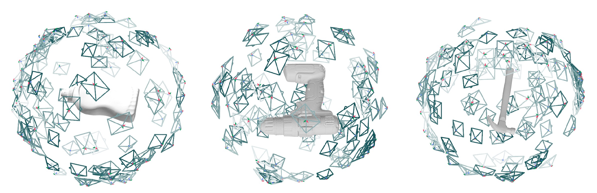
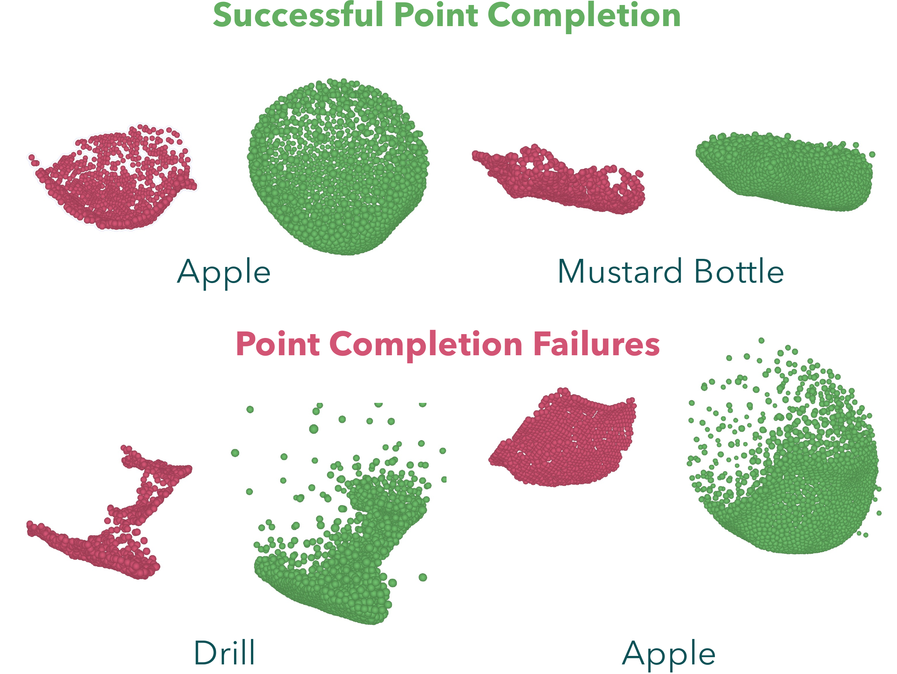
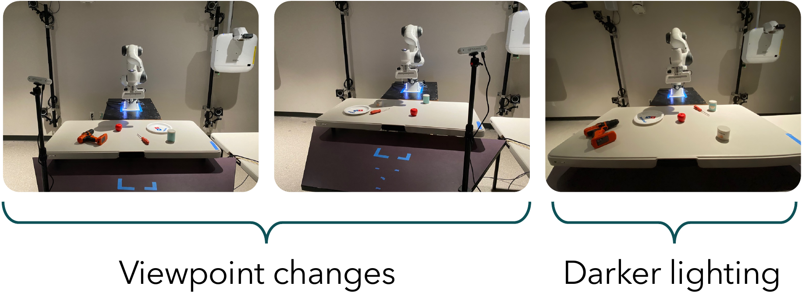
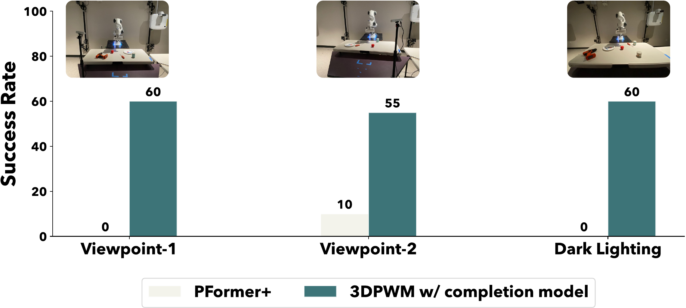
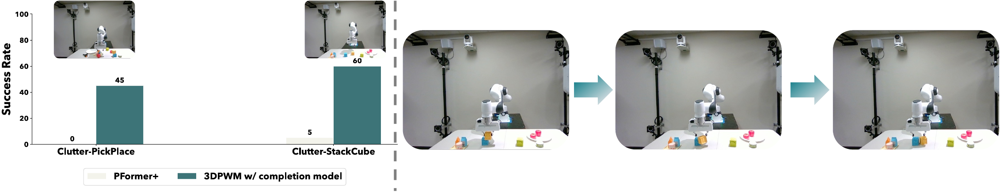
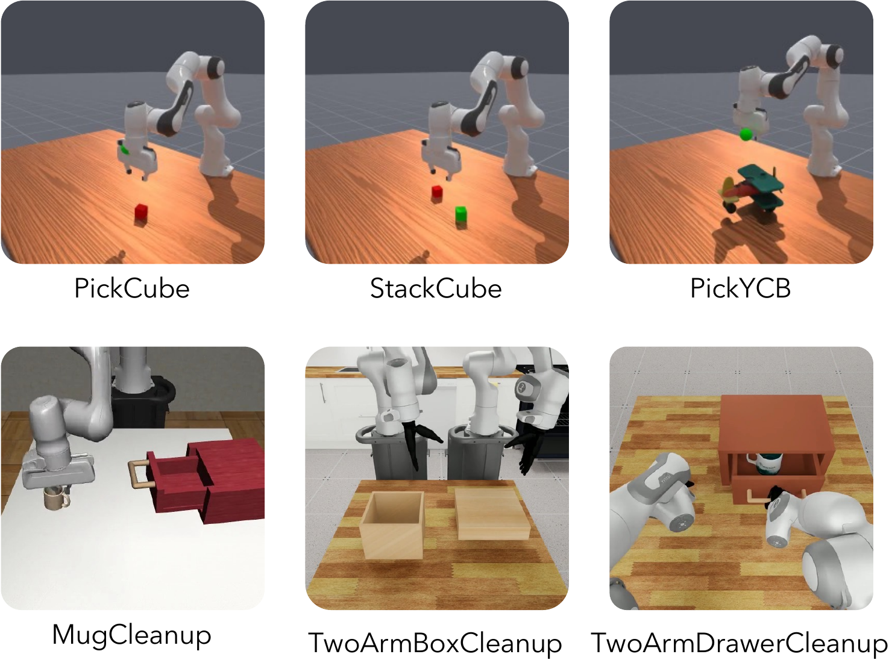

AData generation
Point completion. For each YCB object we render depth maps from 100 random viewpoints on a sphere of radius 1 looking at the origin (object centred), and back-project them to partial point clouds.

Dynamics modeling. For all ManiSkill and DexMimicGen tasks a custom wrapper samples complete point clouds from object, part and geom meshes. To get correspondences, points are sampled once in the canonical frame and rigid-body poses are applied to every entity. Only one canonical cloud and len(traj) transformation matrices are stored, instead of a cloud per step.
BModel details & hyperparameters
- Batch norm is replaced with layer norm; each of the four encoder stages is reduced to depth 2 for the smaller dataset.
- RPE is enabled in alternating encoder/decoder blocks; patch size is 48 where RPE is on and 256 where it is off.
- Bottleneck dimension d = 256. Action conditioning uses CrossAttn and SelfAttn modules of three layers with eight heads each.
- FlashAttention is used across all attention modules, including cross- and self-attention.
Table III – hyperparameters
| Point completion | |
|---|---|
| jitter prob | 0.3 |
| jitter mean | 0.01 |
| jitter variance | 0.03 |
| global feature channels | 512 |
| encoder channels | [32, 64, 128, 256] |
| decoder upsample factors | [2, 2, 2] |
| decoder hidden channels | 64 |
| seed generator blocks | 4 |
| seed gen. attn heads | 8 |
| seed gen. attn dims | 384 |
| seed gen. upsample factor | 2 |
| seed gen. output dim | 256 |
| Point dynamics model | |
|---|---|
| serialization pattern | Z + TZ + H + TH |
| patch interaction | Shift Order + Shuffle Order |
| positional encoding | [CPE, RPE, CPE, RPE] |
| stride | [2, 2] |
| encoder depth | [2, 2, 2] |
| encoder channels | [32, 128, 256] |
| encoder num heads | [8, 8, 8] |
| encoder patch size | [256, 48, 256] |
| decoder depth | [2, 2] |
| decoder channels | [128, 256] |
| decoder num heads | [8, 8] |
| decoder patch size | [256, 48] |
| mlp ratio | 4 |
| qkv bias | True |
| drop path | 0.3 |
| pre norm / shuffle orders | True / True |
| MPPI planner | |
|---|---|
| planning horizon | 20–30 steps |
| # samples | 200 |
| # top candidates | 64 |
| λ | 0.7 |
| noise σ | 5 |
| Training | |
|---|---|
| loss | Huber, δ = 0.25 |
| optimizer | AdamW |
| learning rate | 1e-4 |
| scheduler | StepLR, step 30, ε = 0.1 |
SAM3 prompting (VLM prompt used to get point prompts)
Given the task description, Gemini Robotics 1.5 identifies task-relevant objects and outputs one or more 2D points per object. These points prompt SAM3 to segment the objects.
You are a vision-language model assisting a robot with a manipulation task.
Given:
1. A natural-language task description.
2. An RGB image of the current scene.
Your goal is to identify all objects that are relevant to successfully
completing the task and provide one or more 2D point locations for each
relevant object.
Instructions:
1. Read the task description carefully and determine which physical objects
the robot must interact with, manipulate, move, avoid, or otherwise
reason about to complete the task.
2. In the image, locate each task-relevant object.
3. For each relevant object, select a 2D point that lies clearly INSIDE the
visible region of that object.
- The point should be near the center of the visible portion of the object
whenever possible.
- Do not place the point on the object's boundary.
- Do not place the point on the background, another object, or an
occluding object.
- Prefer points that are visually unambiguous and far from object boundaries.
- If an object is partially occluded, place the point on the visible portion.
...
Output format:
[ { "object": "<short object description>", "point": [x, y] }, ... ]
Example:
Task: "Pick up the red mug and place it inside the bowl."
Output:
[ {"object": "red mug", "point": [312, 241]},
{"object": "bowl", "point": [487, 326]} ]
Be precise: every point must fall inside the corresponding object's visible pixels.
CCost function specification
We prompt Gemini 2.5 Flash with the task description and the detected-objects JSON to produce a PyTorch cost_fn(cfg, point, info) that returns a scalar (lower is better). The prompt asks the model to:
- infer the task objective and use only objects present in the JSON, including ones the robot could collide with;
- operate on predicted point clouds (centroids, distances, containment, proximity) and use
infoonly for what clouds cannot give (grasp state, task stage, goals); - measure task progress, with stage-dependent terms for multi-step tasks;
- add collision costs that complement rather than overwhelm the task term;
- prefer smooth costs (Euclidean distance,
tanh, exponentials) over hard thresholds; return one scalar; keep it simple.
Below is an example cost function adapted almost directly from the ManiSkill PickCube reward.
Listing 1 – PickCube cost on 3DPWM rollouts
def cost_fn_pick_cube(cfg, point, info):
"""Cost function for the PickCube-v1 task."""
goal_xyz = torch.tensor(info['extra']['goal_pos'], device=cfg.device)
left_gripper_xyz = point['left_gripper']
right_gripper_xyz = point['right_gripper']
cube_xyz = point['cube']
cube_center_xyz = cube_xyz.mean(dim=0)
tcp_xyz = (left_gripper_xyz.mean(dim=0) +
right_gripper_xyz.mean(dim=0)) / 2
tcp_to_cube_dist = torch.norm(cube_center_xyz - tcp_xyz, dim=0)
reaching_reward = 1.0 - torch.tanh(5.0 * tcp_to_cube_dist)
cube_to_goal_dist = torch.norm(cube_center_xyz - goal_xyz, dim=0)
place_reward = 1.0 - torch.tanh(5.0 * cube_to_goal_dist)
contact_reward = 1.0 if info['grasped'] else 0.0
if info['grasped']:
total_cost = -place_reward
else:
total_cost = -(reaching_reward + contact_reward)
return total_cost
Contact is not modeled explicitly: we treat the object as grasped when the gripper TCP is within 2.5 cm of the object centre (info['grasped'] = True). Thresholding the gripper–object–gripper intersection was hard to tune in practice; explicit contact modeling in point world models is left for future work.
DFailure scenarios
Completion is trained on partial clouds rendered from single meshes at 100 viewpoints, so occlusions caused by other objects are never seen. Noisy points outside the object boundary are also a common failure. Remaining real-world failures are also attributed to biased centre-of-mass estimates.

ERobustness to lighting and camera viewpoint
Policies trained on calibrated point clouds are generally robust to lighting and viewpoint shifts [20, 65]; our PickApple results (20 trials per plot) agree.


FComparison to GNN-based methods
Gaussian-splatting methods such as GBND [24] combine Gaussian point dynamics with splat rendering. As 3DPWM models dynamics rather than rendering, we compare against GBND's GNN dynamics. Lower Chamfer and higher correlation are better; best in bold.
| Task | Chamfer L1 ↓ | Reward corr. (r) ↑ | ||
|---|---|---|---|---|
| GBND | 3DPWM | GBND | 3DPWM | |
| PickCube | 0.185 | 0.009 | 0.37 | 0.86 |
| Pick YCB | 0.21 | 0.028 | 0.33 | 0.85 |
| Box Cleanup | 0.301 | 0.022 | 0.16 | 0.83 |
Integrating a rendering pipeline into 3DPWM, with 3DPWM as the dynamics model, is future work.
GSim2Real in cluttered environments
PickPlaceApple: the apple starts near a group of clutter objects and the cost adds a heuristic collision penalty. StackCube: stack a yellow cube on a blue cube in a moderately cluttered scene; precise placement is critical.

HBaselines: ParticleFormer
Each partial input has point velocities and a one-hot instance segmentation vector. We run two variants, both trained on segmented partial clouds with the authors' hybrid Chamfer + Hausdorff loss: PFormer (3-layer) – re-implementation with three transformer layers as in the original paper; and PFormer+ – encoder/decoder replaced by our PTv3 architecture.
| Task | Avg. rollout len. | Chamfer L1 ↓ | Reward corr. (r) ↑ | ||||
|---|---|---|---|---|---|---|---|
| PFormer+ | PFormer (3L) | 3DPWM | PFormer+ | PFormer (3L) | 3DPWM | ||
| PickCube | 66 | 0.080 | 0.132 | 0.009 | 0.61 | 0.41 | 0.86 |
| Box Cleanup | 218 | 0.132 | 0.225 | 0.022 | 0.30 | 0.19 | 0.83 |
IEnvironments

| Task | Description | Observation points | Action dim |
|---|---|---|---|
| PickCube | Lift the cube from the table to a goal position in the air, given as a 3D point. | 1,200 | 7 |
| StackCube | Stack the red cube on top of the green cube. | 1,500 | 7 |
| PickYCB | Pick any YCB object from the table to a goal position in the air, given as a 3D point. | 1,200 | 7 |
| MugCleanup | Pick and place the mug inside the drawer and close it. | 8,192 | 7 |
| TwoArmBoxCleanup | Pick up the lid of the box using two dexterous hands and place it on the box. | 10,000 | 24 |
| TwoArmDrawerCleanup | Pick and place the mug using two dexterous hands inside the drawer and close it. | 12,000 | 24 |
Table VI. Complete-cloud points and action dimension per task. The dexterous two-arm tasks are much higher-dimensional: 24-d actions (6 pose + 6 finger dimensions per arm, versus 7 for the parallel gripper) and up to 12,000 points (versus 1,200), and MugCleanup already uses 8,192 points.
JThings we tried that did not work
Shared here in the hope that they help others.
- SAM3D instead of custom-trained completion. The completions generalize to many common objects but do not align with the partial input, even when given sensor depth rather than estimated depth. This is a known issue (GitHub issues #79 and #162 of that repository).
- Depth foundation models to avoid noisy completions (MoGe-2, Depth Anything 3). Depth and back-projected clouds were very clean, but (a) objects were misaligned in the real world, as with SAM3D, and (b) small details, depending on viewpoint, were missed – details that can be crucial for manipulation.